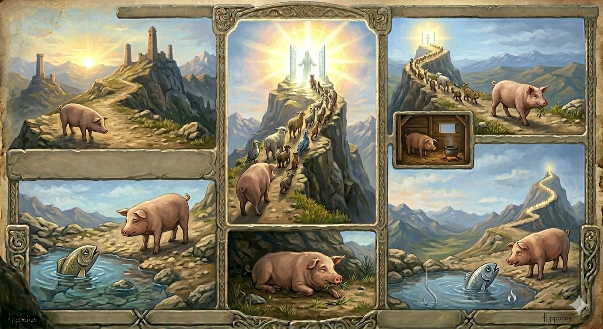

И.А. Дахкильгов. Хьехаме дувцарш - поучительные рассказы-притчи.
И.А. Дахкильгов. Хьехаме дувцарш - поучительные рассказы-притчи. Из ингушского фольклора.

Хьаькъал декъача хана
Цхьа хьакха хиннай хьаькъал декъача шийна хьаькъал эца яха араяьна. Из йодаш бӀарга а ейна, фордала чкъаьра хьалъара а хьежа, аьннад: - Хьайна кхоаче, кӀезига-дукха сона а далахь цигара хьаькъал. Яха дӀаэттай хьакха хьаькъал декъача. Йоккха хиннай хьаькъал декъача аргӀа. Хьакхийна дагадехад: "Лаьттан букъ сога а хилча, форд чкъаьрага а хилча, сона сенна деза из хьаькъал". Кхы цига ха ца йоаккхаш, цӀенгахьа йолаеннай хьакха. Из юхайоагӀаш бӀаргаейча, хаьттад чкъаро: - Дерий Ӏа, хьакха, сона хьаькъал? - Данзар, даьра. Лаьттан букъ сога а хилча, форд чкъаьрага а хилча, аьнна, дагадеха, вайна сенна деза хьаькъал, аьнна дагадеха, юхайийрза йоагӀа со, - жоп деннад хьакхо. - Из къамаьл Ӏа мел дувц дегӀах чакхъювла цӀи хьонеи кач тувса зӀак сонеи эшаргбац вайна, - аьнна, чкъаьра фордала бахаб.
РУССКИЙ
Когда распределяли ум
Прослышав, что где-то наделяют живые существа умом, свинья отправилась в путь. Выглянувшая из моря рыба попросила и ей принести ума. Придя на место распределения ума, свинья увидела огромную очередь. "Если земная твердь принадлежит мне, а морские просторы принадлежат рыбе, зачем нам нужен этот ум", - решила свинья и отправилась в обратный путь. Рыба спросила ее: - Ты принесла нам ума? - Нет, не принесла. Если земная твердь принадлежит мне, а морские просторы принадлежат тебе, зачем нам нужен ум? - Пока у тебя будут такие представления, всегда найдется огонь, который прожжет тебя, и найдется крючок, который подцепит меня, - укорила рыба и ушла в море.
ENGLISH
When wisdom was being distributed
Having heard that living creatures were being granted wisdom, the pig set off on a journey. A fish peered out from the sea and asked the pig to bring some wisdom back for her, too. Upon arriving at the place where wisdom was being handed out, the pig saw a huge queue. 'If the land belongs to me and the seas belong to the fish, why do we need this intellect?' thought the pig. She then set off on the return journey. The fish asked her, "Did you bring us some wisdom?" "No, I didn't." "If the land belongs to me and the seas belong to you, why do we need intelligence?" "As long as you hold such views, there will always be a fire to burn you and a hook to catch me," the fish said, before swimming back into the sea.
НОХЧИЙН
Хьекъал доькъучу хенахь
Цхьа хьакха хилла хьекъал доькъучохь шена хьекъал эца йаха арайаьлла. Иза йодуш бӀаьрга а йайна, хӀордера чӀара ара а хьаьжна, аьлла: - Хьайна кхачахь, цхьа кӀезиг суна а далахь цигара хьекъал. Йахан дӀахӀоьттина хьакха хьекъал доькъучохь. Йоккха хилла хьекъал доькъучохь рагӀ. Хьакхийна дагадеъна: "Лаьттан букъ соьгахь а хилча, хӀорд чӀерехь а хилча, суна стенна деза и хьекъал". Кхин цигахь хан ца йоккхуш, цӀехьа йолайелла хьакха. Иза йуха йогӀуш бӀаьрга йайча, хаьттина чӀеро: - Деарий ахь, хьакха, суна хьекъал? - Ца деара, дера. Лаьттан букъ соьгахь а хилча, хӀорд чӀерехь а хилча, аьлла, дагадеъна, вайна стенна деза хьекъал, аьлла дагадеъна, йухайирзина йогӀу со, - жоп делла хьакхо. - И къамел ахь мел дуьйцу дегӀах чекх йуьйла цӀе хьунийн коча тосу мӀара суйнийн йоьшуш хир бац вайна, - аьлла, чӀара хӀордах бахна.
ПОГОВОРКИ
БӀаргашта хьалардар гу, хьаькъала тӀехьадоагӀар гу. Глаза видят то, что перед ними, ум же видит (предугадывает) последствия.Виреи хьакхеи хиннаяц Далла хьаькъал декъача. Ни ишак, ни свинья не явились к богу Дяла, когда он раздавал ум-разум (о неблагородных людях).Дешар – заман къулба (тур). Учение – компас (меч) эпохи.Ет бахкалца Ӏе а Ӏийна, пкъи ца юаш вахар санна. Как тот, кто дождался отела и ушел, не попив молозива.Китай мехка вахий а хьаькъал хьаэца. Хоть в Китай поезжай, но ума прибавляй.Хьакха хьакха хиларах Далла сигаленга хьажийтац из. Поскольку свинья и есть свинья, бог Дяла не дал ей увидеть небо.Хьаькъал Далла хьа ца делча, кхычахьара из эцаргдац. Если бог Дяла ума не дал, то ниоткуда его не возьмешь.Цадийша саг – хьунсаг. Необразованный – “лесной мужчина” (мифический персонаж. – И.Д.)Цадийшар дийшачох массаза хьийгав. Неуч всегда завидует ученому.Цаховраш ховрачар даар да. Незнающие – пища для знающих.Шийна деннача хьаькъалах кхоачам бер тувлавенна саг ва. Довольствующийся природным умом – ограниченный человек.Ӏовдалча наха хьаькъал делкъал тӀехьагӀа дийкъад. Между дураками ум распределяли после обеда.